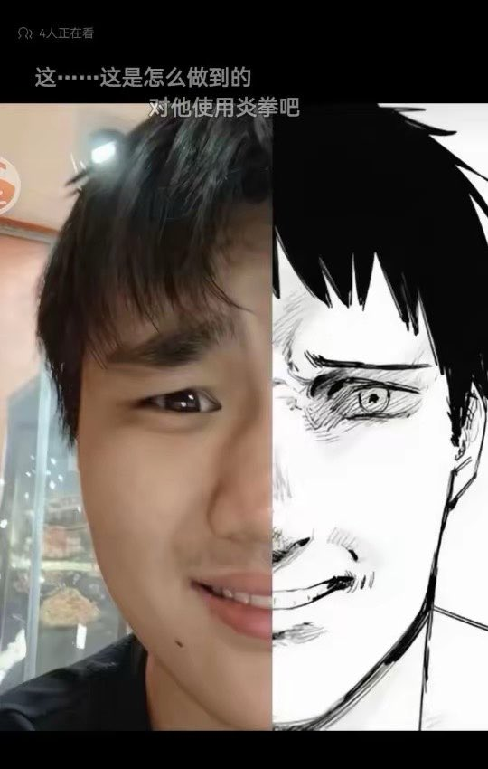

f hv
@fhv932189957574
你绷住了吗，说认真的，我只感到了荒谬，防止别人骂你猪头而提前说好看的女生吗，性别一换不是一样，依旧虚空记得和索敌
还看到一个欧美那边女性完成高等学业的比例2比1男性，女权足够牛逼，真的牛逼，感觉看到一盘围棋对面从开始就开始布局，真是战斗爽啊，加速吧，我要一睹世纪之争😋😋😋
纷争，爽！

Sizhe思哲
@Sizhe_bitcat
我丢感觉好看的女生一个人去做全麻手术，好像很难避免不被猥亵吧。
我记得以前都爆出来好多起医生猥亵女患者的事件。
随便一个全麻手术整个人就失去所有意识，然后进入沉睡状态了，但凡有点坏心思，都可以很轻松的达到目的，而且事后很难察觉。 https://t.co/gcj0xXPNMb